Conquest First Blood Faction Focus: Nords
Hello and welcome to the Tabletop Battles Faction Focus for the Nords in First Blood!
Faction Overview
If that is a blunt opening, it is because the Nords like to get straight to the point, and so will we today. The Nords are a human-ish faction in the lore of Conquest and the mandatory viking army for those among us who really like mead, beards and braided haircuts. To further cater to that viking mindset, they are also the premier aggressive army that likes to charge up the board and re-assemble the opponent into a corpse smörgåsbord, or die gloriously in the attempt. So, gird your loins, sharpen your axe (you did bring your axe, right?), swear your mightiest oath and join us as we dive deep into the playstyle and rules of the Nords in First Blood.
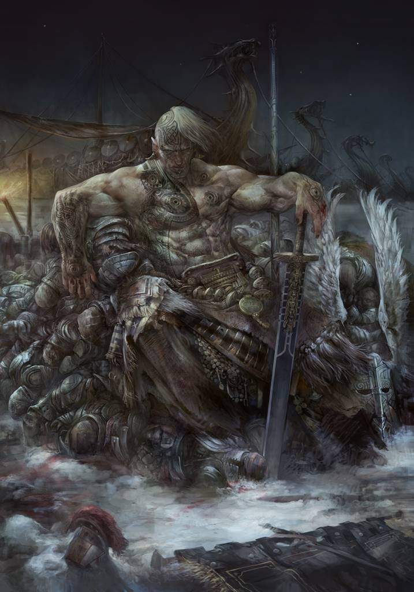
Nords Iconic Artwork – Credit: Para Bellum GamesArmy Rules
Of course, as is tradition, the Nords are also divided into four subfactions for rules purposes. These are the Mortals (exactly what it says on the tin), the Exalted, the Halfbloods and the Jotuns.
The Exalted are the results of bio engineering and superhuman warriors that gloriously– slept through their version of Ragnarök where the Old Dominion shuffled up into the Nords’ lands and killed all their gods – the Spire (and Weaver!) scientists that elevated them. Now, they are the high kings of the Nords, living legends and the fathers of all manner of whacky mutants, such as …
The Halfbloods! They are the result of your bio engineered supersoldiers living much longer than intended and actually procreating. They are the Cavalry and Brutes of the army and bestow the faction with much of its fantastical visual flair.
Last there are the Jotuns, the mighty giants of the frozen north that previously enslaved all the humans that the Spires didn’t pump full of super soldier serum and pig genes. When the Einherjar – the Exalted – woke up, they made sure that those circumstances changed right quick and they are now indebted to the Nords through the swearing of mighty oaths.
Now, granted, that summary is a little padded, but it’s a) because Nords lore is sweet and b) because the actual army rules are a little dry for such a flavorful faction.
Nords Warriors get an extra Attack when fighting something bigger (because they need to live down the shame of failing their gods, you see?), when they Rally, they get a free half move, and when they move and subsequently move again (forgoing a Clash after their Charge), they get Impact +1. Unless they have the Feral special rule, for some reason.
These are all perfectly serviceable rules, even powerful in the case of the free move and the free Impact hits, aiding the Nords in pursuing their gameplan of jumping the enemy and beating them to death. Speaking of which!
Characters
Nords Characters are – with some obvious exceptions from among the nerd Nords – absolute beatsticks and incredibly scary. Turns out splicing the DNA of wolves and pigs the size of a car into people makes them good at killing. Who knew? Let’s see what that pig and wolf DNA can do, shall we?
Blooded
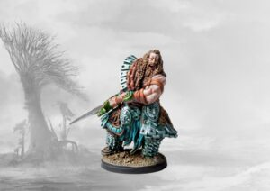
Blooded – Credit: Para Bellum GamesThe first up is the Blooded. He represents those lucky few who do an alright job at taming their genetic inheritance. Since he is the offspring of the Einherjar, he is an absolute powerhouses by mortal standards.
3 Attacks at Clash 3 with Cleave 3, and Bloodlust for +1 Attack while Engaged with multiple Enemies means that he will take a good chunk out of just about everything that he hits – and March 6 makes sure that he can get there reasonably easily for a foot Character. His defensive profile further clarifies his role.
Defense 2 and Resolve 3 might not seem like much, even with 4 Wounds, but when fighting multiple Enemies, the Blooded gets +1 to their Resolve, leaving him with a pretty respectable Resolve 4. This means that more often than not, he will rebound from the first hit to retaliate in kind.
To further help him clear the chaff, he gets a Unique Clash Action: Rend. This has the Blooded deal 2 Hits to every Enemy Warrior within Engagement Range, with Cleave 1 to boot. This will do a good job at clearing out hordes of plebs to get to the meat of the enemy army.
Just make sure that you don’t send him into the heavy hitters without guaranteeing the first strike – a rule that can just as well apply to the Nords as a whole!
And before we forget, the Blooded, like pretty much all Characters, gets access to Command Abilities. Two in this case:
- Battlecry has Enemy Warriors in the Blooded’s 5” Command Range get -1 to their Resolve, a pretty brutal debuff in this version of First Blood.
- Savage Frenzy is the Blooded’s synergy ability and doles out Unstoppable and Overrun to Half-Blood Warriors in Command Range for added mobility. Not a force multiplier that looks good at first glance, but getting to move through enemy Engagement Ranges and getting free movement out of killing Enemy Warriors is really good and will allow you to snowball massively if you utilize it correctly.
At just 110 points, he is a steal for what he brings to the table and a shoe-in for any list that utilizes the Half-Blood side of the army – especially since he brings the excellent Trolls with him as a Mainstay, one of the few true anvils in the army.
Jarl
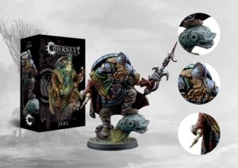
Jarl – Credit: Para Bellum GamesThe Jarl is a local leader of the Mortal forces and to give you an idea of the kind of badassery necessary to live where the Nords do, they have an almost identical profile to the Blooded, though he is a bit more cumbersome at a mere March 5.
3 Attacks at Clash 3, 4 Wounds, Resolve 3 and Defense 2 – a very respectable base combat statline that lets him tussle with most other Characters. He loses out on a point of Evasion (1 to the Blooded’s 2), some Cleave, down to a mere Cleave 1, but he gains a lot in return.
A Shield, for one, for added defense, and a Unique Action to blow his Warhorn to let every Friendly Warrior within his 6” Command Range Rally. And since he is a leader, he gets an extra Command Ability:
- Fury of the North gives friendly Mortal Warriors in Command Range the Counter-Attack Special Rule to Drive Enemy Warriors Back after rolling any “1”s during blocking. The Nords don’t love to Block with pretty low Defense across the board, but when they do and they get lucky, they get some free movement out of it when they Charge back in. Pretty good!
- Battle Hardened gives friendly Mortal Warriors in Command Range Hardened, for additional Block Dice on a roll of “1”. Once again, you are a bit reliant on getting lucky here, but if you are running Mortals, you are likely less elite than when running Half-Bloods or Exalted, so you are rolling more dice with the Jarl than you might think at first.
- Spearhead is the more on-brand Command Ability here, giving Friendly Mortal Warriors in Command Range an additional +1 Impact. If the other abilities seemed to lean to defensive for your taste, they are just here to bail you out when you lose priority in a crucial engagement.
The Jarl is a steal at 90 points, and therefore even feasible to deck out with the excellent Character upgrades the Nords have access to. I could see giving him a Shard of Vinda for 10 points – making his Hit Rolls of “1” unblockable – or Heriolf’s Folly for 5 points for a really fun hail mary, getting to Re-Roll all dice once per game during either Attacking or Blocking.
Jotnar Seidr
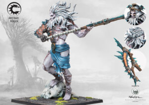
Jotnar Seidr – Credit: Para Bellum GamesThe Nords’ character monster is the mighty Jotnar Seidr, who comes in at a clean 300 points. March 7 is a great start for a combat Character, and he can bring the pain with 5 Attacks at Clash 4, Cleave 3 and Terrifying. Defensively, he is very durable for a Nords Character with Defense 3, Resolve 4 and 5 Wounds before becoming Wounded.
When he does become Wounded, he switches to a more aggressive stance, losing some mobility – down to March 6 –, but gaining an Attack (up to 6), one point of Clash (up to 5). He also gains Indomitable, letting him ignore the usual negative modifier to his Resolve from Overkill, though his defensive stats dip a bit, down to Defense 2 and Resolve 3. When he does die, he also punishes the Enemy with Lethal Demise 3.
He also gets to choose between an axe (Atgeirr) and a spear (Skorge). The Spear is a precision implement: Hit Rolls of 1 cannot be Blocked and inflict an Additional Wound. The Axe, meanwhile, is your horde-killer option – with it, you roll an additional Attack against each Enemy you target.
Taken as a whole, the Jotnar Seidr makes for a very nice Distraction Carnifex – though he is still somewhat fragile for a Monster, so he takes some finesse, like the Nords as a whole do. He also has some Command Abilities, though they are a bit less interesting than those of other Characters.
- Blazing Conviction is the synergy option. With it active, Friendly Monster Warriors in Command Range (6”) get to Block Hits with their Resolve Characteristic. This is a nice buff, but if you are running two or more giants in a list, you would generally prefer not to have them shadow each other to this degree. It will come in handy, but you don’t want to bend over backwards to ensure you get this bonus.
- Molten Domain is the more generally useful option. When using this, all Warriors (Friendly and Enemy both) treat the Battlefield in the Seidr’s Command Range as Dangerous Terrain. This means, as a reminder, that they will suffer a single Hit when coming within 6” of the Seidr. Very nice and flavorful, though it is important to remember that this generally won’t do much except thinning out larger hordes of stuff unless you get lucky – most models have at least Defense 2.
Taken as a package, I’d say the Seidr is fine, if not inspiring. He is a decent distraction and your only option for a monster mash list, but there are better options out there. Like:
Konungyr
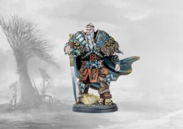
Konungyr – Credit: Para Bellum GamesKonungyr is the Nords’ word for king, and what a magnificent king he is. I’d like to make it very clear how truly nutty the Konungyr is in combat, suitable for one of the leaders of the pure-blooded Einherjar, the Exalted.
For 135 points, you get a combat statline that is worth comparing to the Jotnar Seidr: 4 Attacks at Clash 4 with Cleave 2, Defense 3, Resolve 4, Indomitable and Terrifying to take no negative modifiers to Resolve, pretty much ever. Combined with his impressive 5 Wounds, he won’t get taken down by most things out there, especially if he gets the drop on his opponent.
Rounding out his excellent profile are his Living Legend ability – if he slays an Enemy Monster or Character, all Friendly Warriors in his 7” Command Range become Inspired! until the End of the Round – and two Commands:
- Strength of the Einherjar gives the Konungyr Smite and Juggernaut, giving you two options to clear a path through troublesome chaff.
- Might of Mannheim gives Friendly Mortal Warriors in Command Range the Brutal Special Rule for more devastating Charges.
It might not need stating, but I will state it anyway: The Konungyr is an absolute house, though priced at a premium of 135 points, moreso because he gets the very elite melee bruiser Steel Chosen as a Mainstay Unit. Resist the urge to kit him out even more, he doesn’t need it. Even if getting an extra point of Defense with the Dweg-Forged Plate might seem tempting, getting another body instead is probably right more often than not.
Faithbearer Reginleif
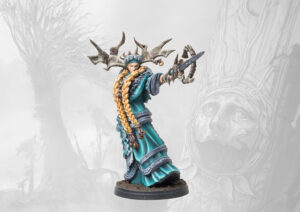
Faithbearer Reginleif – Credit: Para Bellum GamesReginleif is the legendary Character the Nords have access to – one of the Valkyries, Mortal cultists who worship the divine blood of the Einherjar – and she is a very potent Spellcaster.
For a nerd Nord, she actually has a decent statline: March 6, 2 Attacks at Clash 2, Blessed, Defense 2 and Resolve 3 with 3 Wounds. At 130 points, this is an alright package before we get to the meat of her actual profile.
To wit, she is a Spellcaster 3 with a Draw Event to gain 2 Essence for absolutely free, doles out Bravery to Mortal Warriors in her 7” Command Range – and remember that the Nords get to do a halved March each time they Rally!
But the kicker is her Ability Hrokksdóttir: Once per game, in the Supremacy Phase, you get to just choose to go first. This is massive for any army, but for one that leans as aggressive as the Nords do, this is an absolute gamechanger, literally.
And there are still her spells to consider:
- Ancestral Lineage (3 Essence) gives all Friendly Warriors within Command Range Cleave +1. Nice and simple and almost always good.
- Fateweave (1 Essence) gives Friendly Warriors within Command Range an additional +1 Evasion before Rolling to Block. Also almost always good.
- Fólkvangr (2 Essence) lets a friendly Mortal Warrior within Command Range immediately Rally and Perform an Action. Very spicy, especially considering that you get a free half March out of it with the Nords Army Rule. It’s not always as useful as the other options, but it will come up in most games unless you are running a list with no Mortals – but why would you?
And as if that all wasn’t enough, Reginleif has the excellent Bow Chosen as a Retinue option. There really is a lot to love here and if it wasn’t for the fact that most of the other Nords Characters are very good themselves, I would call her an auto-include. She might still be, if you get right down to it.
The kicker really is the Supremacy cheat code, though. For an army as reliant on momentum as the Nords, the value of that option can not be overstated.
Shaman
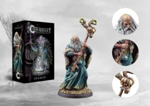
Shaman – Credit: Para Bellum GamesReginleif is a tough act to follow, and the Shaman is also the Character option that also gets to be a Hero. Historically, everything that can also be a Hero is generally better off being run as one, so let’s see what the Shaman can do.
For 70 points you get an old man and therefore the only Nord who can’t body people. He is a Spellcaster 3 and has a Unique Action to immediately Roll for Attunement, letting him consistently cast all his Spells once he is set up.
His spells are:
- Mist Weave (1 Essence) lets Friendly Warriors within Command Range Re-Roll a single Block Die during Blocking. Very nice, though the Shaman’s Command Range is notably small at 5”.
- Rime Storm (3 Essence) is a debuff aura that denies Enemy Warriors in Command Range the ability to get Inspired! or Aimed! Pretty good, though having him within 5” of an Enemy with the lower-ish Defense of most Nords regiments is somewhat perilous.
- Maelstrom (2 Essence) is an alright nuke: 2 Hits at 10” range that Breaks the Enemy Warrior if they take any Wounds from it.
The package is not inspiring for a Warlord, but there are uses for him, even if he is not as flashy as the other options. For one, cheapness is a quality all of its own. Spending only 70 points to start your list can be nice, if you want to go wide or run many elite options.
The other use case for him as a Warlord is his Retinue: He makes the excellent Ulfhednar into a Mainstay option, so run him if you want to run them without spending a Restricted slot to do so.
It ain’t much, but the option is there, even if he looks a bit weak compared to some of the other Characters (such as Reginleif). I would mostly run him as a Hero, still.
Vargyr Lord
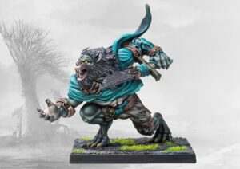
Vargyr Lord – Credit: Para Bellum GamesGetting back into the swing of things, the Vargyr Lord is another excellent close combat character. March 7 to get in close, 5 Attacks at Clash 3 and Cleave 2 to dismember people, and Bloodlust, Fearsome and Unyielding to get some extra Bonuses out of being stuck in with the enemy frontline.
Defensively, he is okay at Defense 2 and Resolve 3 with 6 Wounds, though you don’t want to take the first hit, as is tradition. For some sustain, the Vargyr Lord gets to heal 1 whenever he Slays any Enemy Warriors during Clash Action – though note that you don’t get to double up on this!
For some added utility, you get two Command Abilities for synergy with Half-Blood Regiments:
- Bloodscent gives Half-Blood Warriors in his 5” Command Range the Burnout Special Rule. Note that this applies to himself also, and that it is especially good with his Werewarg Retinue, who get to also heal back any Wounds taken from the Burnout Draw Event.
- Bestial Howl gives Half-Blood Warriors within Command Range the Dread Special Rule for some added Defense when you lose Supremacy to your opponent.
The obvious competitor for the Vargyr Lord is the Blooded, since they both want to be Warlord of a Half-Blood list. Compared to Last Argument of Kings, though, they each have more of a defined role here, with neither being the clear pick over the other.
Run the Vargyr Lord in aggressive alpha strike Brute lists and the Blooded for a more traditional bruiser style list with Trolls as an anvil to grind your opponent down.
Volva
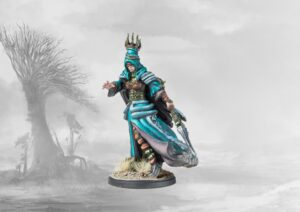
Volva – Credit: Para Bellum GamesLast among the Warlords, we have the Volva – the non-legendary counterpart to the excellent Reginleif. Her kit is a bit more humble and she is cheaper at a flat 100 points for the same statline, losing only an inch of her Command Ability for a still respectable 6” and gaining Flawless Strikes in return.
She is a Spellcaster 3 as well, but gains no additional Essence as a Draw Event. Instead, the Volva gains an Essence every time a Friendly Warrior within Command Range becomes Broken!
With that Essence, she gets to cast her pick of three spells:
- Fruit of the Golden Tree (1 Essence) lets her Heal 1 any amount of Friendly Warriors within Command Range for each Essence spent (to a minimum of 1). Pretty good for the Valkyrie brick that she wants to run with.
- Hella’s Caress (1 Essence) is a debuff aura that forces Enemy Warriors within Command Range to Re-Roll successful Resolve tests. Pretty good for grinding – with the Valkyrie brick that she wants to run with.
- Til Valhalla (2 Essence) gives Friendly Warriors within Command Range the Lethal Demise +1 Special Rule. Pretty good for when you’re grinding with the Valkyrie brick that she wants to run with.
Okay all jokes aside, I like that the Volva has a clear and defined use case over Reginleif, even if I like that latter’s abilities more. If you really want to run a brick of Valkyiries, she is the clear pick. And thankfully, Valkyries are good, so she is good. Nice!
Heroes
Moving from the Characters onto the Heroes, the Nords have a pretty sizable selection there as well – one of the perks of being among the older Conquest factions. Are they as good as the Characters were? Let’s have a look.
Captain
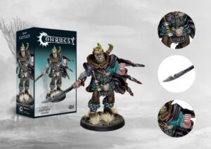
Captain – Credit: Para Bellum GamesIf you have played Last Argument of Kings for a while, you know this guy. For the longest while, he was an auto pick in every unit of Raiders you ran, since he gave them the ability to score despite being a Light Regiment.
In the current First Blood ruleset, he is just as good. 55 points for an okay melee fighter – 3 Attacks at Clash 2, Cleave 1, 3 Wounds at Defense 2 and Resolve 3 – that’s all fine. But the meat is his Vanguard ability that he also convers on your Raiders.
We’ll get to them in a bit, but Raiders are almost as good in First Blood as they have historically been in Last Argument, and giving them extra movement – through Vanguard and Flank, with the Captain’s Unique Command Ability – is a godsend.
Since Raiders are not quite an auto-include, the Captain isn’t either, but both are very tempting picks indeed.
Savage
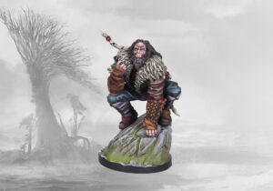
Savage – Credit: Para Bellum GamesThe Savage is a hybrid ranged and melee fighter and meant to go with your ranged skirmishers, like Stalkers and Bow Chosen. To that end, he is very mobile at March 6 with Vanguard and Flank, has decent midrange shooting – Barrage 2 at 12” with Volley 2 – and is still okay in melee with 2 Attacks at Clash 2.
On the flipside, he is very fragile at Defense 2 at Resolve 2 and a mere 2 Wounds, but his whole kit is designed to outmaneuver and flank the opponent, so that shouldn’t matter much if you’re doing your thing.
On the Prowl gives your Infantry Warriors in the admittedly short 4” Command Range of the Savage Deft for Re-Rolls on Hits of “6” at range and Pack Tactics gives you Deadly Shot when shooting at Engaged Enemy Warriors.
Last but certainly not least, his Unique Command Ability gives Half-Blood Warriors within Command Range the Opportunists Special Rule for +1 Attack against Outnumbered Enemies.
At 50 points, it’s a very purposeful package with a clear gameplan in mind: Run him up the flanks with a ranged regiment, get some shots in, then charge in and finish the job. Nice and simple!
Shaman
We have discussed the Shaman at length in the Characters section, so this is your reminder that you can – and probably should – run him as a Hero instead. Sorry, gramps!
Shield Biter
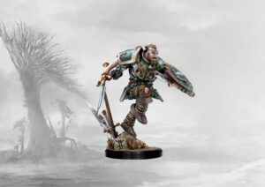
Shield Biter – Credit: Para Bellum GamesSimilarly specialized is the Shield Biter, who does exactly what you would suspect him of doing. He runs at people, hits them very hard, and tries not to die in the meantime.
For 60 points, you get a March 6 body with Defense and Resolve 2, 3 Wounds and – hypocritically – the Shield Special Rule. His Berserker Special Rule denies opponents’ the benefits of their own Shields and he packs Flurry and Oblivious to Re-Roll Hit Rolls of “6” and test Resolve while Broken!, respectively.
For some added utility and flexibility, he has the option to throw an axe at short range – Barrage 1 at 6” at Volley 1 – and the Linebreaker Command Ability, which gives Mortal Warriors the Overwhelm Special Rule, forcing Enemy Warriors to Re-Roll Block Rolls of “1”.
He’s a bit feast or famine, but if you can get the jump on people with him and a unit of Raiders, for example, he can absolutely make his points back. If you don’t, you’re gonna be sad, but that’s a Nords player’s lot in life.
Skald
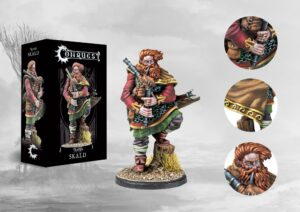
Skald – Credit: Para Bellum GamesDo you want to play the bagpipes in a warzone? You can, for the mere price of 50 points! You also get some other stuff, but the bagpipes are really the main draw here, obviously.
The Skald has an okay statline – March 5, 1 Attack at Clash 2, Defense 2 and Resolve 3 – but what you’re really here for is, predictably, his buffs.
Bardic Fortitude gives Mortal Warriors within his 6” Command Range the Fearless Special Rule and he has two further Command Abilities:
- Stories Yet Untold gives Friendly Mortal Warriors in his Command Range Tenacious for +1 Resolve while Engaged with multiple Enemies.
- Songs of Sagas and Steal gives Relentless Blows instead, for additional Hits on Hit Rolls of “1”
I really like this guy, and not just for his bagpipes. He’s a bit less specialized, but he is generically useful in any Mortal list, and there are some very nice Mortal units to buff up, as we will see in a second, here.
Thegn
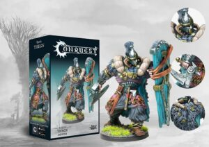
Thegn – Credit: Para Bellum GamesFor a more elite option, there is the Thegn, a bruiser of a Hero that wants to embed into a unit of Huskarls and grind.
75 points is somewhat steep for a Hero, but he justifies his cost: 2 Attacks at Clash 3 with Cleave 2, 3 Wounds, Defense and Resolve 3 with a Shield and Unyielding, Juggernaut and a Special Rule to just straight up Break an Enemy Warrior of equal or smaller size.
For synergy, he can dish out Bastion in his 5” Command Range to Exalted Warriors as a Command Ability to deny Charge bonuses and to give Enemy Warriors no ground when your frontline Warriors become broken.
He’s a little costly and a wee bit defensively slanted for a Nords list, but I really like him as a frontline anchor in a unit of Huskarls – an excellent anchor for your selection of Hammers to smash onto.
Mainstay Regiments
And so, after a long list of truly excellent Characters and Heroes, we come at last to the regular Regiments, of which there are four: three Mortal options, and one each for Exalted and Half-Blood lists.
Bearsarks
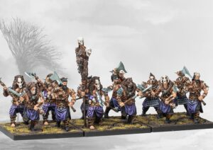
Bearsarks – Credit: Para Bellum GamesThe Bearsarks are what you might come to expect based on their name: 100 points nets you a fairly potent hammer for a cheap Mainstay option: 1 Attack at Clash 2, but with Cleave 2.
This comes, as it often does, at the cost of Defense with a merely average Defense and Resolve 2, but with Tenacious for a Resolve bonus while Outnumbered.
They are a nice bit of listbuilding glue for Mortal lists, but a tad expensive for my taste and you don’t get a discount for bulking them out. Cleave 2 and March 6 is really the selling point here, but they are not made to be your frontline.
Keep that in mind and deploy them on the flanks and you’ll likely make your points back.
Huskarls
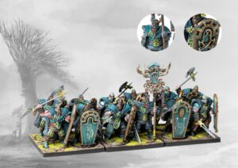
Huskarls – Credit: Para Bellum GamesFor an army of Hammers, an anvil comes at a premium, and that is just what the Huskarls are. Defense 3 is the standout stat here, and you’re paying 120 points for that upfront, with 30 per additional model, but it’s more than worth it, especially considering that Shield, Cleave 1, and Unyielding sweeten the deal.
If you combine all those with their okay baseline of 2 Attacks at Clash 2 and Resolve 2, you get a very potent package and a nice core for your Mortal lists. They also carry the Exalted tag, which is likely a listbuilding concession only, but it is nice to have and opens up the excellent Thegn as an option for them.
Don’t overspend here – start your list out with 4 or 5 and a Thegn or 6 to 7 without – and then load up on offense and you won’t be disappointed.
Raiders
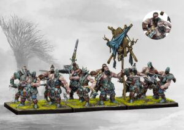
Raiders – Credit: Para Bellum GamesI’ve sung the praises of the Raiders before, and at first glance, it might not be obvious why that is. They have a thoroughly average statline – Clash 2, Defense 2, Resolve 2 – what’s there to love here, you might ask?
The difference is 2 Attacks, Flurry, and a points cost of only 90 and 20 points per additional model. Other factions pay more for these kinds of bodies, because they come with extra Resolve, a Shield or some other defensive bonus.
The Raiders are cheap because they are specialized. If they don’t have to weather the first strike, you are paying less for more – with extra Attacks and Flurry as a force multiplier.
And that is before we get into the Impact Hits they get from the Army Rules, making extra bodies even more valuable – or their axe-throwing option for short range shooting, Barrage 1 at 6” at Volley 1.
Stalkers
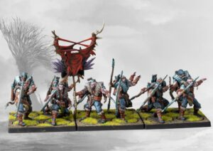
Stalkers – Credit: Para Bellum GamesSneaking in at the very tail-end of the Restricted options are the Stalkers, who exemplify the same ethos at range. 105 points/30 points per additional Stalker is not as cheap, and they are even worse-off defensively at a scrotum-tightening Defense and Evasion 1.
But in return they are mobile (March 6 and Vanguard), decent at range (Barrage 1 at 12” with Volley 2) and fairly deadly through synergy, gaining Deadly Shot when shooting at Engaged Enemies like the Savage we discussed above.
I’m not as in love with them at a baseline as I am with the Raiders – they are a bit expensive as a filler unit and a bit underwhelming as a unit to truly build around.
But if you love the gameplay fantasy there are worse things to do with your points than running a 6 man squad of Stalkers and a Savage to guide them, for sure.
Restricted Regiments
Now we come to the truly exciting stuff: The Restricted Regiments. There are some great units to go through here, so let’s get right into it.
Bow Chosen
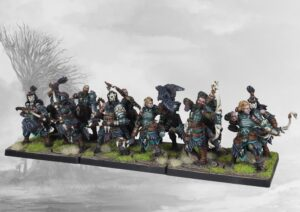
Bow Chosen – Credit: Para Bellum GamesWe are starting off the Restricted options with a bang. The Bow Chosen are a very beloved option for the Nords: Elite ranged troops that still pack a punch in melee. For 150 points you get a mere four dudes, and looking at their statline you could be forgiven that they aren’t that great.
Sure, they get both a decent ranged attack (Barrage 1 at 14” with Volley 2) and alright close combat damage (1 Attack at Clash 2, Defense 2 and Resolve 3) – but usually, these kinds of hybrid units pay a premium for being able to do either at an okay rate, when it would be better to pay less for a unit that does a single thing much better.
Their ability Chosen Hunters makes all the difference though. As a Draw Event, you get to choose between one of three bonuses for their Activation.
- Eye of Odin gives the Bow Chosen the Sureshot Special Rule, meaning they ignore Intervening models and Obscuring Terrain when shooting.
- Limbs of Yggdrasill gives them the Precise Shot Special Rule for extra damage – their Hit Rolls can only be Blocked by Block Rolls with a lower dice value.
- Guile of Loki is the get out of jail free card. With it, the Bow Chosen gain Elusive, meaning they don’t become Broken! when Repositioning and leaving Combat.
With their extra bonuses, the Bow Chosen well and truly can do it all. Pressure at range, counter punch deceptively hard when opponents try to March Charge them to bind them in melee, and get out safely when something truly scary tries to pin them down to make sure you don’t lose their hefty points cost.
They are still an investment and you can’t run them in just any list, but they can and will perform very well in any list with a proper gameplan in mind for them – no matter what happens.
Fenr Beastpack
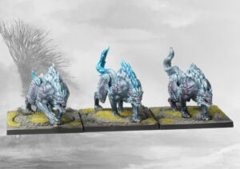
Fenr Beastpack – Credit: Para Bellum GamesThe Fenr Beastpack, in contrast, are a very straightforward unit that does one job and one job only: flanking cav. Thankfully, you pay much less for them: 65 points for the first and 60 per additional model.
For that price, you get a very solid package: March 8 and Flank to get into position and facilitate a Charge followed by a Clash more often than not, which they do very well. In combat they get 3 Attacks at Clash 2, Impact (1), Terrifying and Opportunists for an extra Attack against Outnumbered Enemies.
They can not take the heat they dish out, though. They have Dodge to weather some light shooting, but not much more than that with Evasion and Resolve 2 and a mere 3 Wounds per Wolf, so make sure you hide them well before Charging in.
Goltr Beastpack
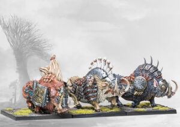
Goltr Beastpack – Credit: Para Bellum GamesThe Baconator is a much less subtle unit by comparison. The Goltr Beastpack are a Bully unit and best aimed straight into the enemy’s frontline. March 6 makes Charge and Clash Activations difficult if not impossible, but at Impact 2 they can March Charge as well for some mild damage to get you started, enough to soften the blowback of their preferred targets: objective chuds.
Defense 3 and 4 Wounds means that they can weather the clapback from mid tier units, while Trample, Brutal, and 2 Attacks at Clash 2 is enough output to nuke your opponent’s lines straight into hamburger.
They won’t take out higher tier units alone, and their low Resolve means that they are not as suited to grinding as other units. But with some support, they can absolutely function as shock cavalry to neutralize priority targets as well.
The main thing to keep in mind with the big pigs is the fact that they are very undercosted for what they are. Their low March value, middling Attacks and average Resolve mean that they can be costed at 85 points to start and 95 per additional slice of bacon – a steal for the rest of their profile.
Steel Chosen
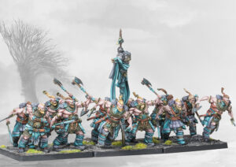
Steel Chosen – Credit: Para Bellum GamesSpeaking of Steel, the Steel Chosen, as you can glean from the name, are the other elite troop type the Nords have access to. They, too, deal in flexibility, though are notably not able to switch between ranged and melee at will.
Instead, their Draw Event – Riddle of Steel – gives them their choice between three different melee combat buffs:
- Valor of Tyr is the generically useful option. It has them gain the Flurry Special Rule for some more consistent output.
- Vigilance of Heimdallr is their silver bullet. It gives them Quicksilver Strikes to counter high Evasion units. Not too relevant most of the time, but obviously great when it comes up.
- Stamina of Thor is there for mobility. With the Overrun Special Rule they get to move up to half their March characteristic rounded up each time one of them kills a model. They start at 5”, so they get to move 3” every time to keep the kill train going. Very nice to have the option when you can see where a combat is going to go.
It’s a very nice set of buffs on their great baseline stats. 2 Attacks at Clash 3 is their bread and butter, meaning that they can very reliably kill basic Infantry owing to the average Defense value being 2 – and even against higher tier units they can rely on the Nords Army Rule for extra attacks and Flurry to turn the odds in their favor.
Lack of Cleave and their merely okay Defense (2, with a Resolve of 3) are really the only sticking points here. They have Bodyguard too, serving as ablative Wounds for your Characters if you want, but it’s probably not worth it, since they are expensive and not too tanky. However, they are still very much worth considering at 140 points for four with 40 points per additional model – even if they are not as good as their ranged cousins.
Trolls
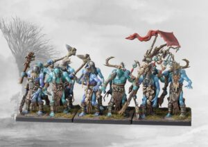
Trolls – Credit: Para Bellum GamesA fittingly weird unit, Trolls are the premier grinder unit in the Nords army list. They are expensive, since the Nords are not meant to be good at this, but Para Bellum found a nice spot for them at 160/50 points.
For all that, you get a slow, grindy anvil: March 5, 2 Attacks at Clash 2 with Cleave 2 on offense and Defense 2 with Resolve 2 on defense might not seem like much, but them being 2 Wounds each makes all the difference.
It means that they can win fights against lineholders every single time and hold their own against mid tier units very reliably. Factor in the Regeneration Special Rule and you got yourself a nice stew going.
It’s probably still better to load up on aggression with the Nords. But if you’ve got your heart set on playing hammer and anvil, you can do a hel of a lot worse than running Trolls, Goltr and some Bow Chosen to patrol the flanks.
Ugr
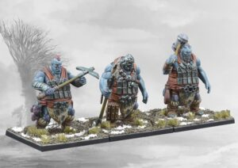
Ugr – Credit: Para Bellum GamesAs you might expect, the Ugr are blunt, straightforward can-openers. Cleave 3 is really the selling point here, but their stonks only go up from there. 3 Attacks at Clash 3 paired with their Cleave is enough to reliably threaten even high tier units and Monsters.
That alone would be worth 80 flat points per model in my book, but they even get some gravy on Defense. D2/R3 is about the baseline for Nords, but Oblivious, Fearless and 5 Wounds really go a long way to make the Ugr more than just a silver bullet against high Defense armies.
Ulfhednar
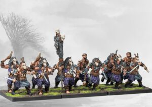
Ulfhednar – Credit: Para Bellum GamesAnother entry in the long list of Nords units that want to run screaming into the enemy lines and kill things, the Ulfhednar are your non-supernatural flavor of berserkers. And they capture the player fantasy very well with Bloodlust, Lethal Demise 1 and Oblivious.
With their set of Special Rules and their above average stats (March 6, 2 Attacks at Clash 2, Defense 2 and Resolve 3), they do a great job at fighting while outnumbered – against basic D2/R2, 1 Attack at Clash 2 chuds, they will create an absolute massacre with up to 4 Attacks.
Just don’t expect them to stick around long. In fact, run about 4 or 5 of them (easy enough to slot in at 110/25 points) and as long as you get the Charge, you should be golden.
Valkyries
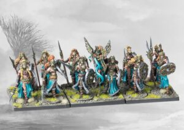
Valkyries – Credit: Para Bellum GamesIn gameplay terms, the Valkyries cosplay as Trolls – fitting, since they worship the blood of the biologically enhanced Einherjahr those guys descend from.
They derive their grindability not from superior biology though, but instead from being Blessed and actually carrying a Shield. Smart stuff, since it means their average defensive stats (D2/R2, 1 Wound) can go a longer way, allowing them to capitalize on their very decent offense.
With 1 Attack at Clash 2 with Flawless Strikes and Support they can hold the line and grind out a win while the rest of your mobile force overruns the flanks. Very much worth considering at 125 for just four and 30 per additional model!
Werewargs
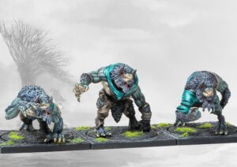
Werewargs – Credit: Para Bellum GamesAnd so we come, at last, to the Werewargs, who are Ulfhednar on steroids. March 7 is already an upgrade, but 4 Attacks baseline at Clash 2 with Bloodlust and Flurry means that they absolutely decimate basic D2 troops through sheer weight of dice.
They Heal 1 whenever they slay a model for some sustain (definitely needed since they will take chip damage even from chaff at D2, and 4 Wounds is just slightly squishy).
They are very playable at 90 points, though they do get expensive to bulk out since every further Warg costs 100 points. Think of them as bulk buying four-man squads of Ulfhednar – and play them when you want to concentrate your force a bit more to punch through large swathes of low armor models.
Monsters
The Nords Monsters are as straight-forward as you would come to expect. You get your pick from three flavors of Giants: Ice, Sea or Fist, in descending order of sophistication.
Ice Jotnar
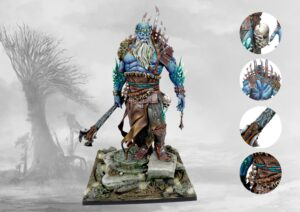
Ice Jotnar – Credit: Para Bellum GamesThe Ice Jotnar are the former kings of their race and the only ones among the Jotnar who get to use magic. In the game, the Ice Jotnar is appropriately a Spellcaster 4 with some decent spells to choose from.
- Blizzard (3 Essence) has all Enemies in his 5” Command Range take a Resolve Test. If they fail it, they become Broken. Simple enough, and good for guaranteeing kills when you Clash afterwards or for wasting half of your opponent’s Activation.
- Howling Tempest (1 Essence) keeps Enemies close with a -2 March debuff when performing a March Action in Command Range.
- Ice Armor (2 Essence) is, however, the best of the bunch and the one you’re most likely to cast every single time. It gives the Ice Jotnar Hardened for additional Defense. Very important since he is slightly fragile for a 280 point Monster at D3/R3 and 5 Wounds both in the Normal and Injured profile.
The rest of his stats are all decent, but sadly not inspiring: 5 Attacks at Clash 5, Cleave 3, March 6 and Terrifying are all great, but he lacks the flexibility his cousins bring to the table. For a straight damage dealer, he just doesn’t have the means to get in close or guarantee getting the jump on his preferred targets. His spells are nice, but they don’t do enough to make you choose him over his cousins.
Mountain Jotnar
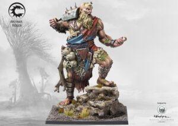
Mountain Jotnar – Credit: Para Bellum GamesThe Mountain Jotnar is a little more midrange in style, and somewhat cheap for a Monster at 240 points. He is almost as punchy as the Ice Jotnar – 5 Attacks at Clash 4 with Cleave 3 and Terrifying – and a little tougher against basic troops with D3 and 6 Wounds (5 when Injured). Though he does fold quickly against actual damage dealers, owing to his low Resolve of just 2.
He has two little Unique Actions that give him some added utility:
- Boulder Toss is a Unique Volley Action that has an Enemy within 10” take 2 Hits with Armor Piercing 2. And all Warriors (Friendly and Enemy) within 1” of that model take 1 Hit. It’s a bit risky since your Warriors like to bunch up around the enemy, but it’s still nice to have the option to pull this out, especially in Round 1 or 2, before the Mountain Jotnar is in the thick of it.
- Sweeping Blow is a Unique Clash Action and has All Enemies within Engagement Range suffer 2 Hits with Cleave 2, afterwards, said Enemies are even Driven Back! for some added mobility. A very nice horde clearer to keep the Mountain Jotnar moving, and mathematically superior against most anything upward of 3 models swarming you. Nice!
Sea Jotnar
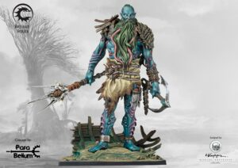
Sea Jotnar – Credit: Para Bellum GamesMy personal favorite though, visually and gameplay-wise, is the Sea Jotnar. March 7 is a great start for such a mobile army, and it just gets better from there. The Sea Jotnar gets a free Volley Action each Activation – not shabby at Barrage 3 with Armor Piercing 2 and Volley 3, though it is low range at 8”.
And he is almost as good in melee at Clash 4, 5 Attacks, Cleave 2, Brutal, Fiend Hunter and Terrifying. With that kind of profile, I’d expect the Ice Jotnar to get a free spell and the Sea Jotnar to just have the option of going ranged.
The only clear downside he has compared to the other Jotnars is his fragility: 5 Wounds in his Normal profile and 4 in his Injured state with D2/R3 (Normal) and D2/R2 (Injured) is straight up worse than the Mountain and Ice Jotnar – but who cares if you paste everything you charge?
As things stand, at 260 points, he is the clear pick for me and much more interesting than either of his giant friends. Which is good, because he is the best looking model the Nords have. Don’t @ me.
Sample Army List
I’m not gonna lie – I’m mainly here for the monsters. The tribal warrior and viking stuff is fine and all, but have you seen the pigs? Come on. Come on. You get to fight with giant pigs? How can you not want to play the Half-Bloods?
=== First Blood ===
Half Bluds [995/1000]
Nords
* Blooded (1) [110]:
* Savage (1) [50]:
* Stalkers (5) [135]:
* Trolls (6) [280]: Leader
* Goltr Beastpack (2) [180]:
* Ugr (3) [240]:
I also really like Trolls, so I ran a sticky 6 man squad of them with a Leader for some added mobility. The Blooded can run with the Ugr to issue commands to them while the Stalkers skirmish around the flanks and the Goltr can clean up any problems along the way or help the Trolls out when they get stuck in a bad spot.
This list is not as aggressive as your typical Nords army (though still plenty punchy!), so I’ll throw in a more typical list that plays with the boring humans.
=== First Blood ===
More boring [990/1000]
Nords
* Reginleif (1) [130]:
* Captain (1) [55]:
* Raiders (6) [130]:
* Bow Chosen (6) [240]:
* Goltr Beastpack (3) [275]:
* Ugr (2) [160]:
This list is probably better – and it still gets to run some pigs! They’re a bit more front and center here as this list wants to run a three pronged assault with the Goltr, Raiders and Ugr all smashing into the enemy in round 2 or 3.
Reginleif can get you supremacy in a pinch and the Bow Chosen can support wherever you most need them. Very straightforward fun, even if you’re missing out on playing with Trolls (you poor soul).
Final Thoughts
And that’s all she wrote! The Nords are among the more specialized armies in Conquest, so you really need a taste for wanton carnage to enjoy them. If you like crazed, half-naked dudes, weird mutants and megafauna all smashing and bashing anything that looks at them funny, they are an absolute blast to play – and reward good decision making and clever strategy much more than you would think to look at them. So go out there, grab your axe, and do some punching!
Have any questions or feedback? Drop us a note in the comments below or email us at contact@tabletopbattles.com. Want articles like this linked in your inbox every Monday morning? Sign up for our newsletter. And don't forget that you can support us on Patreon for backer rewards like early video content, Administratum access, an ad-free experience on our website, and subscriber-only content covering competitive Warhammer 40K!Originally published on Goonhammer.


Leave a Comment